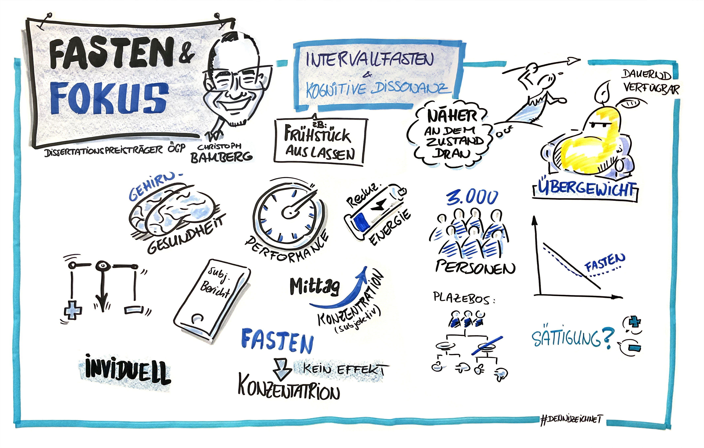

Health psychology · eating behaviour · research methods
Christoph Bamberg, Dr. rer. nat.
I am a psychologist working on self-regulation, eating behaviour and cognitive performance, with a particular interest in intensive longitudinal and open-science methods.
Research & publications
Publication records, citation profiles, open materials and current projects.
Google Scholar
Browse publications and citation records.
Publication recordORCID
My persistent researcher profile and publication record.
Open scienceOSF projects
Ongoing projects, preregistrations, materials and open research outputs.
Most recent publicationStable cognitive performance while adapting to intermittent fasting
Randomised controlled trial · Journal of Health Psychology · 2026
Outreach
Science communication about psychology, research methods and eating behaviour.
Define and Conquer
Together with Olga Perski, I host conversations about conceptualisation, formalisation and measurement in health psychology, with researchers working on practical solutions to recurring problems in the field.
Learning Bayesian Statistics
Podcast guest: Bayesian statistics, fasting and health psychology.
Spektrum der Wissenschaft
Popular-science column on breakfast, intermittent fasting and concentration.
Pint of Science Salzburg
Co-organiser of the Salzburg festival in 2023, 2024 and 2025.
Methods & notes
Short, practical write-ups on statistical modelling and workflows I use in research.
Mixed Effects Location Scale Models for EMA
A practical example of MELSM for EMA data, including extraction and plotting of fixed and random-effect posteriors.
Causal inference · EMADAGs and Bayesian analysis with EMA data
A workflow combining directed acyclic graphs with Bayesian analysis for ecological momentary assessment data.
Multilevel modelling · StanMultilevel correlations in R using Stan
Using simulated nested data to illustrate multilevel correlations and how to implement them in Stan.
Preregistration · simulationDAG & generative model
A worked example of translating a DAG into a generative model and using it to simulate data for a preregistration.
Research at a glance

An illustrated view of my research
This drawing is based on a keynote I gave when receiving the Austrian Society for Psychology Dissertation Prize 2026. The illustration is in German.